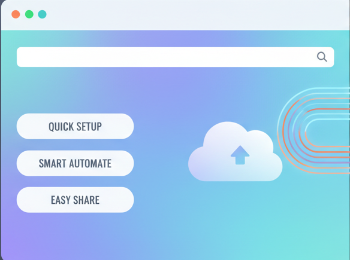
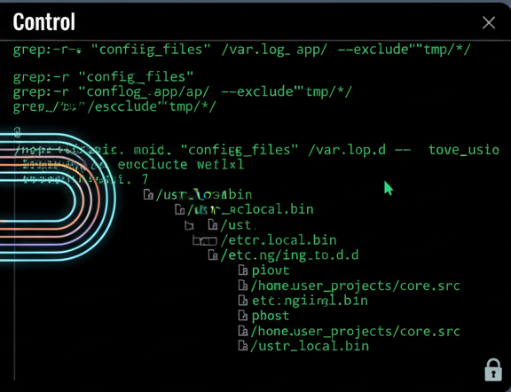
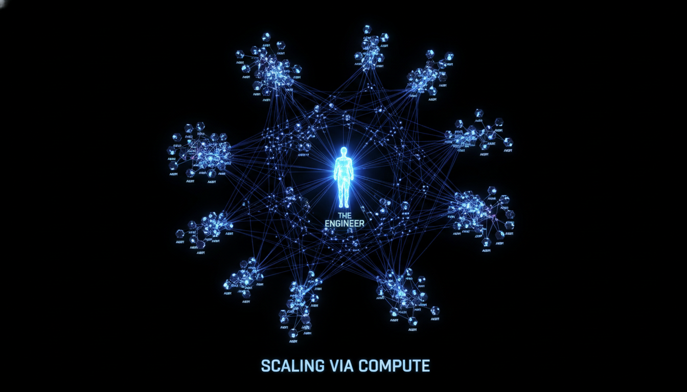

The Rise of Agentic Coding with OpenAI Operator and Claude Code. Explore the shift from AI code completion to agentic autonomy. A deep dive into OpenAI Operator and Claude Code for scaling engineering output via compute leverage.
Engineers, it is time to buckle up. The landscape of software development is shifting beneath our feet, moving from simple code completion to full-scale agentic autonomy.

At the highest level of convenience sit web-based agentic interfaces like OpenAI’s Operator or Canvas. Much like ChatGPT, these provide a clean, familiar UI that abstracts away the underlying infrastructure. They are designed for exploratory developers (often referred to as 'vibe coders') and senior engineers alike who want to fire off a task—such as 'find a bug and fix it'—and let the cloud handle the heavy lifting in a sandboxed environment. However, this ease of use comes at the cost of control; you are operating within a highly opinionated ecosystem.

In contrast, the terminal remains the highest leverage point for engineering work. Claude Code lives here. By running in the terminal, Claude has raw access to your file system, your bash commands, and your local toolchains. This provides maximum control, allowing you to build programmable Agentic Development Workflows (ADWs) that are impossible in a locked-down web interface. As an engineer, the goal isn't to pick one tool, but to manage the trade-offs: use web-based agents for high-level background tasks and Claude Code for granular, low-level orchestration.
Claude Code is not just another CLI; it is a thin agentic layer sitting on top of a powerful language model.
It is a 'scrappy' research project that has found massive product-market fit because it focuses on proof of value.
> It doesn't try to be your IDE; it tries to be a programmable partner.

One of the biggest unlocks in the agentic era is the ability to run tasks in parallel. If you scale your compute, you scale your output.
By leveraging background containers or parallel sub-agents, you move from a linear workflow to a distributed one, allowing you to prototype and experiment at a speed that was previously unimaginable.
Agentic Development Workflows: The 'new scripts' of the engineering world.
Agents executing patterns that are hard to express in standard rules.
If a $50/month investment in compute makes that engineer 50% to 70% more productive, the business case is undeniable. High-compute developers will inevitably replace those who try to save pennies at the cost of their velocity.
To stay on the right side of the curve, you must be willing to scale your compute advantage.
We are no longer just writers of syntax; we are architects of systems.